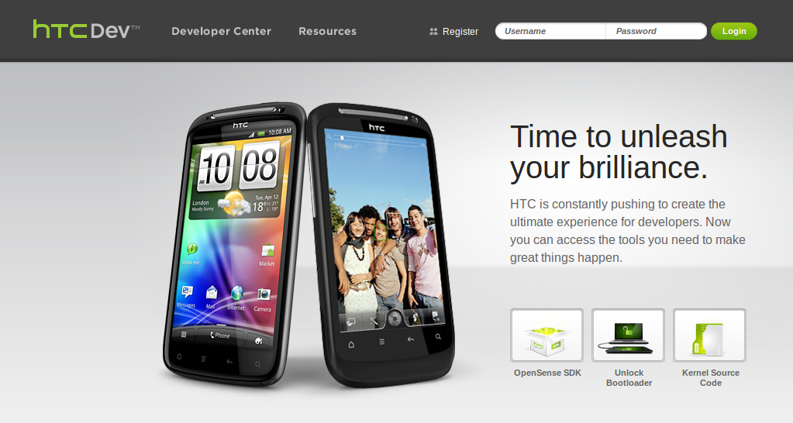
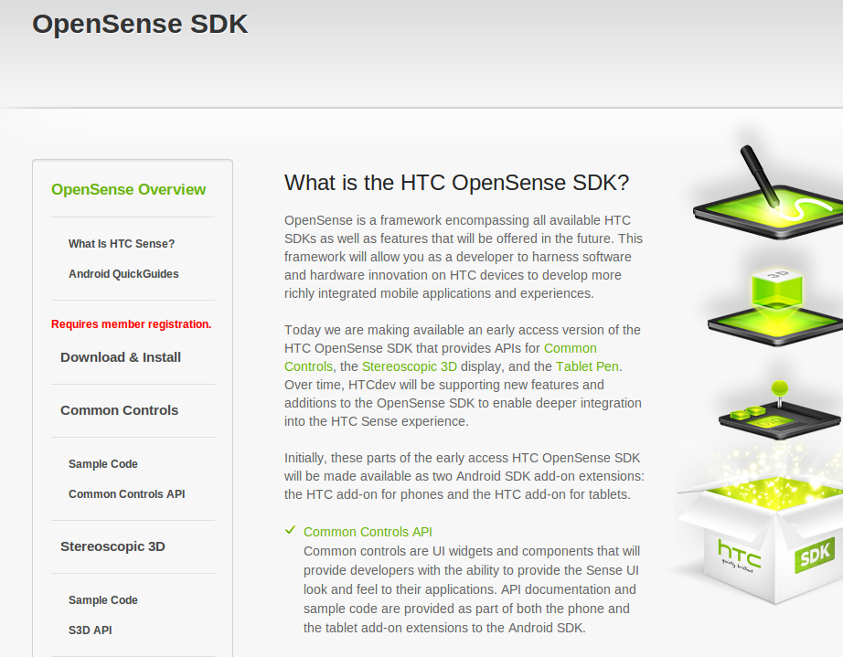

HTC 推出新開發者入口網站 提供啟動載入程式解鎖工具

為了支援該公司的開發社群，台灣智慧型手機與平板電腦製造商 HTC 推出了新的入口網站。日前啟用的 HTCdev.com 被設計為提供內容的統一線上平台，同時可作為協助開發者參與和成長的工具。對於苦等 HTC 針對該公司設備釋出啟動載入程式 (bootloader) 解鎖工具，因而感到失望的開發者來說，這一次終於可在該平台上取得上述工具。
HTC OpenSense 的部份工具與資源將出現在此一平台上。HTC OpenSense 是一套針對 HTC 所有現有軟體開發套件與未來將推出功能的框架，包括針對 HTC Sense 3D 介面與 Scribe 筆技術的軟體開發套件。因此，此一平台可協助開發者運用 HTC 在軟硬體上的創新，開發出更好的行動應用軟體與使用者體驗。
該網站上將提供使用者下載核心原始碼、二進位檔案、HTC Android 裝置的相關資料，以及涵蓋 Android 與 Windows 裝置的培訓資源。
雖然此一開發者網站上的內容相當偏向 Android 陣營，HTC 也不忘向其 Windows Phone 開發者群眾做出象徵性動作，專門為這些開發者提供了一個 WP7 開發流程速成課程，儘管其內容算不上豐富。

HTCdev.com 仍在建構當中，未來幾個月內將陸續增加更多功能。例如該開發者網站一開始啟用時，仍未提供啟動載入程式解鎖工具，讓許多長久等待該工具的開發者有所抱怨。不久後該網站便增加了啟動載入程式解鎖工具的下載連接。有了像 HTCdev.com 這樣一個平台，意味著開發者可以更輕鬆的修改 HTC 的使用者介面 HTC Sense，而無須等待 HTC 的腳步。
編按：目前 HTC Sensation 以及 EVO 3D for Sprint 已經提供解鎖工具了
相關網址：
1. HTC 啟動 HTCdev.com，由開發者為開發者打造
https://thenextweb.com/mobile/2011/08/08/htc-launches-htcdev-com-built-by-developers-for-developers/
2. HTC 推出開發者支援網站，還是沒有解鎖工具
https://techcrunch.com/2011/08/08/htc-launchs-developer-support-site-still-no-unlock-tool/
3. HTC 推出新開發者入口網站
https://www.h-online.com/open/news/item/HTC-launches-new-developer-portal-1320056.html
4. HTC 開放其開發者入口網站，其中包括 3D 顯示與手寫筆的 API
https://www.theinquirer.net/inquirer/news/2100329/htc-developer-portal